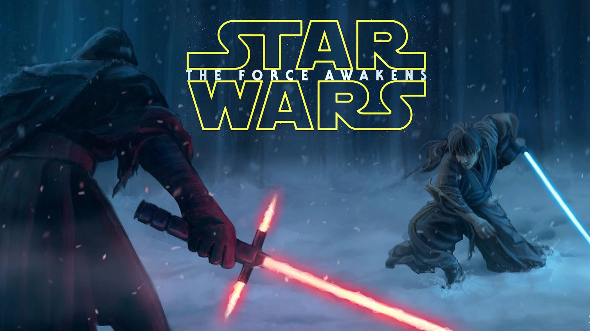

Star Wars: The Force Awakens (also known as Star Wars: Episode VII – The Force Awakens) is a 2015 American epic space opera film produced, co-written and directed by J. J. Abrams. It is the first installment in the Star Wars sequel trilogy, following the story of Return of the Jedi (1983), and is the seventh episode of the nine-part "Skywalker saga". It was produced by Lucasfilm and Abrams' production company Bad Robot Productions, and was distributed by Walt Disney Studios Motion Pictures. The film's ensemble cast includes Harrison Ford, Mark Hamill, Carrie Fisher, Adam Driver, Daisy Ridley, John Boyega, Oscar Isaac, Lupita Nyong'o, Andy Serkis, Domhnall Gleeson, Anthony Daniels, Peter Mayhew, and Max von Sydow. Set 30 years after Return of the Jedi, The Force Awakens follows Rey, Finn, Poe Dameron, and Han Solo's search for Luke Skywalker and their fight in the Resistance, led by General Leia Organa and veterans of the Rebel Alliance, against Kylo Ren and the First Order, a successor to the Galactic Empire.
